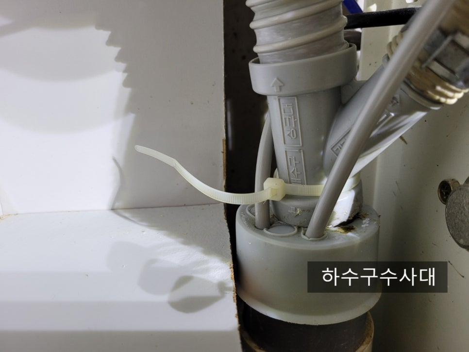
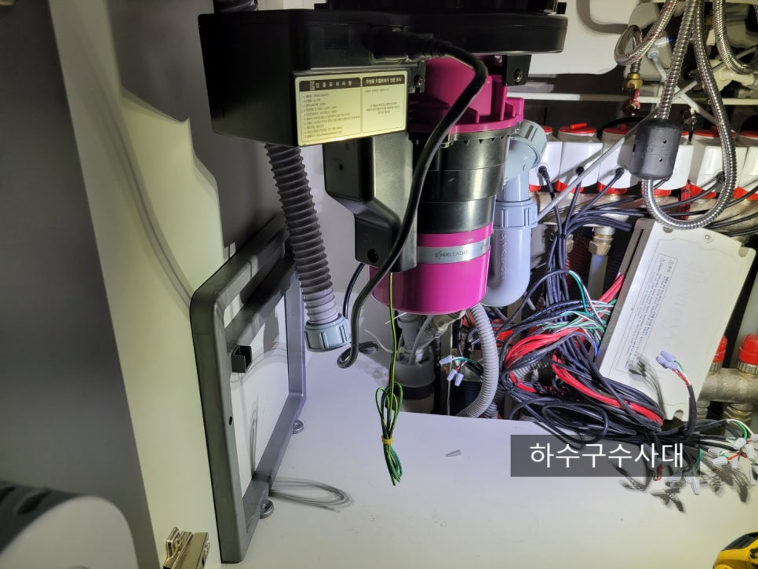
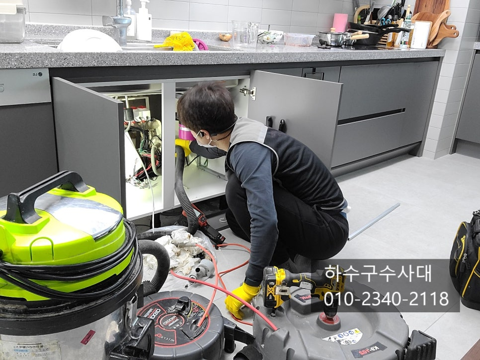
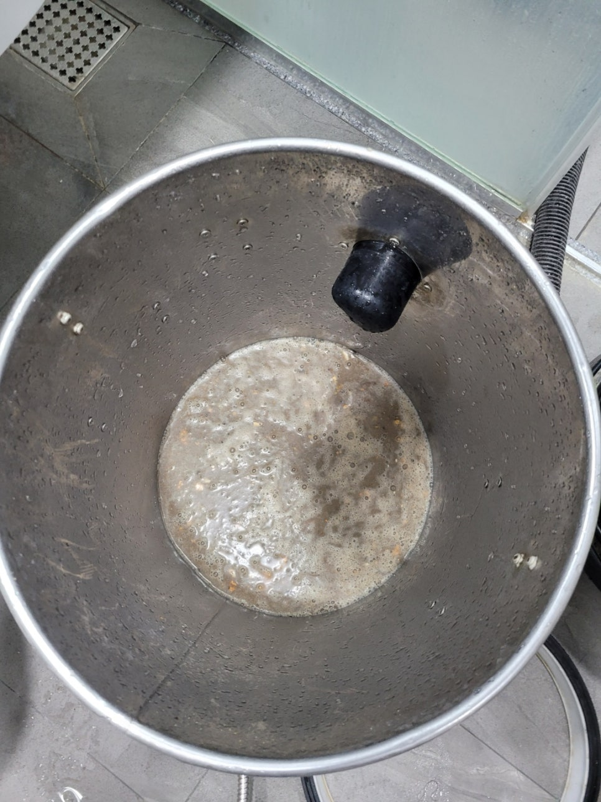
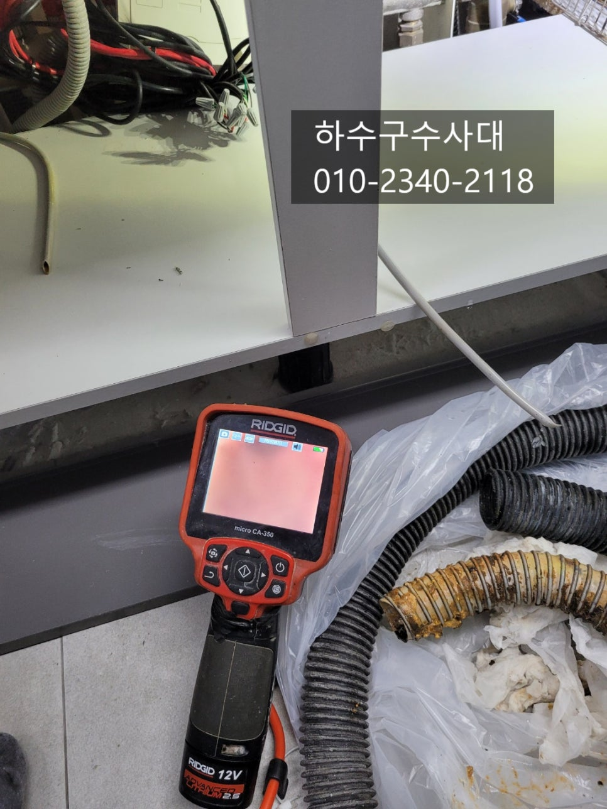
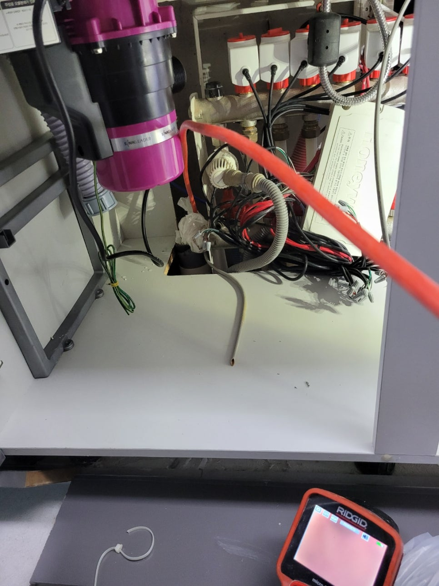
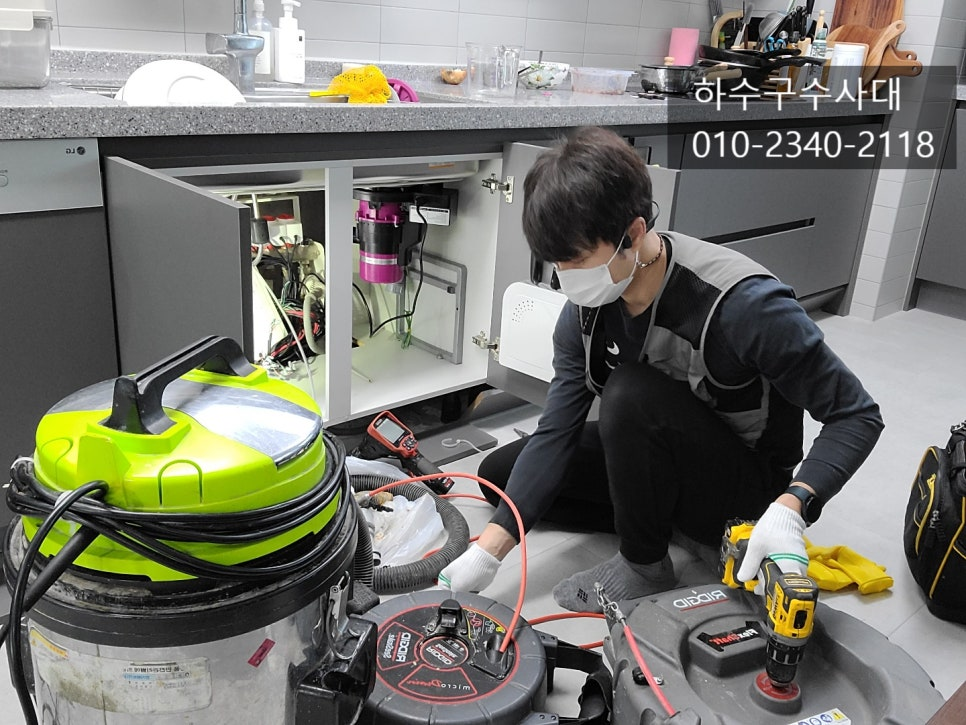

🏠 봉담하수구막힘 수영리 동화리 수기리 하수구막힘
용인 봉담 싱크대막힘 전문 시공 후기

📋 작업 개요
- 위치: 용인 봉담, 봉담, 용인
- 서비스 유형: 싱크대막힘, 하수구막힘, 배관막힘, 역류해결, 뚫는업체, 배관청소
- 작업 일시: 2021. 12. 23. 23:06
- 업체명: 하수구수사대 (010-5615-2118)
🔍 문제 상황
봉담하수구막힘 수영리 동화리 수기리 하수구막힘
안녕하세요
"하수구수사대" 입니다.
눈에 보이지 않는 하수구는 대부분 관리를
하지 않고 소홀할수가 있는데요 하지만
이러한 하수구가 막히게되면 우리가 일상적으로
사용하는 물을 배출시키지 못하기 때문에
큰 불편함을 겪게 됩니다.
특히 싱크대에서 사용할때 음식물들을 씻어
배출되는 기름섞인 물들이 하수구에
흘러들어가기 때문에 관리를 잘 해주셔야 하는데요
물을 충분히 흘려보내지 않으면 배관에
기름이 쉽게 붙을수 있기 때문입니다.
오늘 방문한 고객님 집에는 음식물처리기가 설치되어 있었는데요
2년전에 이사오시면서 설치를 하셨고 이사오자마자 싱크대하수구가
막혀 업체를 불러 한번 뚫으셨다고 하셨습니다. 그때는 스프링으로

🔎 원인 분석
💡 전문가 진단: 하수구수사대010-2340-2118
뚫고 내시경카메라까지는 보지 않으셨답니다.
도착해서 싱크대물을 틀어놓으니 하수구쪽에서 물이 조금씩
새어나오는걸 확인할수 있었는데요 이런경우는 100%하수구가
막혔다고 단정지으시면 됩니다.
간혹 하수구에서 물이 역류되지 않게 비닐이나 테이프로 감아놓기도
하는데 이런경우는 물이 위쪽에서 아주천천히 내려가게 됩니다.
석션으로 배관에 있는 이물질을 뽑아주었는데요
아무래도 하수구에서 오랜기간 썩어있기 때문에
악취도 심하게 났습니다.
아무래도 음식물처리기를 사용하면 음식물이 갈려서
물과 배출되는데 이러한 음식물들이 배관에서 모두
빠져나가지 못하게 되면 배관에 쌓이게 되면서 기름덩어리가
되는데요 이를 예방하려면 물을 충분히 흘려보내줘야하고
한달에 한번쯤은 펑크린같은 세정제를 주기적으로
넣어주는것이 관리요령이라고 할수 있습니다.
내시경카메라로 하수구내부쪽을 확인하려고 했지만
입구부터 기름덩어리가 많아 보이지 않는 상태였어요.

🔧 작업 과정
기름으로 배관이 막힌경우는 대부분 물구멍이 좁기 때문에
배관에 있는 기름덩어리를 모두 제거해 주는것을 추천드립니다.
스프링으로 싱크대배관 막힘을 뚫을수는 있지만
청소까지는 힘들기 때문에 전문적인 장비가 필요합니다.
50mm배관에 최척화되어 있는장비는 리지드사의
플렉스샤프트가 있는데요 장비 앞쪽에 체인헤드가
회전을하면서 기름덩어리를 모두제거하게 됩니다.
내시경카메라도 필수인데요 내부에 기름을
카메라로 보면서 제거하기 때문에 완벽한 작업을 할수 있습니다.
하수구수사대
010-2340-2118
내시경카메라는 필수적인 장비인데요 물이 잘 흘러나간다고 해서
완벽하게 뚫렸다고 할수도 있겠지만 내시경카메라로
확인을 하게되면 생각하지도 않은 이물질들이 발견되기도
한답니다. 예를 들면 싱크대호스인데요 간혹 오래된곳은
싱크대호스가 잘려 하수구에 남아있는곳도 있답니다.
이렇게되면 싱크대조각이 물흐름을 방해하게되면
기름이 더 잘 붙게되기 때문에 내시경카메라를
보는것은 매우 중요합니다^^
배관이 새것처럼 깨끗한데요 이렇게 깨끗하게 청소가된후
관리만 잘해주신다면 향후 막힐일은 전혀 없다고 보시면 됩니다^^
고객님께서도 음식물처리기를 없애려다 배관이 깨끗해졌으니
관리를 잘하며서 써야겠다고 하시면서 다시 사용하신다고 하셨습니다.
음식물처리기에 넣지 말아야 할것들이 있는데요 계란껍질과 뿌리채소류,
갑각류,닭뼈 등등 여러가지가 있으며 생쌀이나 불린쌀도 갈게되면
끈적끈적 점액성분이 있어 서로 붙게되어 하수구에서


✅ 작업 완료
막힐수 있으니 주의하셔야합니다^^
마지막으로 물을 한번에 받아서 내려보는데요
하수구가 뻥!뚫려있다면 소리부터가 다르실겁니다^^
"하수구수사대"는 수도권전지역에서 활동중이며
최신장비로 하수구막힘의 원인파악부터 해결까지
완벽하게 해결해 드리니 언제든지 연락주시면
달려가겠습니다^^




⚠️ 주방 싱크대 배관 막힘 예방 수칙
- ✅ 기름기가 묻은 식기나 프라이팬은 설거지 전 키친타올로 반드시 기름때를 닦아내세요.
- ✅ 주기적으로 싱크대 개수대에 뜨거운 물을 가득 받아 한 번에 내려 배관 내부 기름을 씻어내세요.
- ✅ 배수구 거름망을 미세한 필터로 사용하시고 음식물 찌꺼기가 틈으로 새어 들지 않게 관리하세요.
- ✅ 베이킹소다와 식초를 뜨거운 물과 함께 일주일에 한 번씩 부어주면 배관 살균과 막힘 예방에 좋습니다.
💡 핵심 정리
- 확실한 장비 작업(내시경 점검 및 샤프트 스케일링)으로 원인을 뿌리 뽑습니다.
- 작업 후 1년 이내에 동일한 부위 재발 시 100% 무상 A/S 서비스를 보장합니다.
- 서울 · 경기 · 인천 전 지역에 24시간 언제든 긴급 출동할 수 있도록 항시 대기 중입니다.
❓ 자주 묻는 질문 (FAQ)
🚨 용인 봉담 싱크대막힘 문제로 고민이신가요?
정확한 원인 진단과 확실한 시공으로 재발 없는 해결을 약속드립니다.
24시간 긴급 출동 | 서울 · 경기 · 인천 전지역 | 1년 내 재발 시 무상 A/S